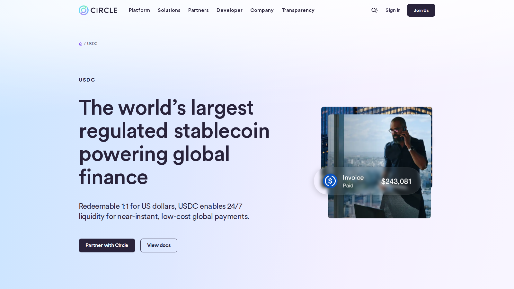
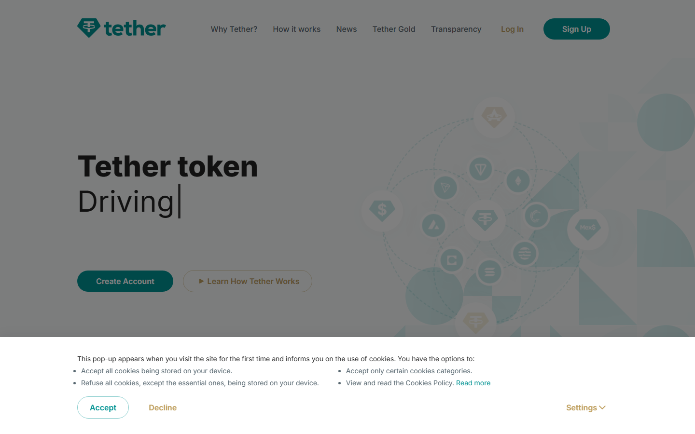
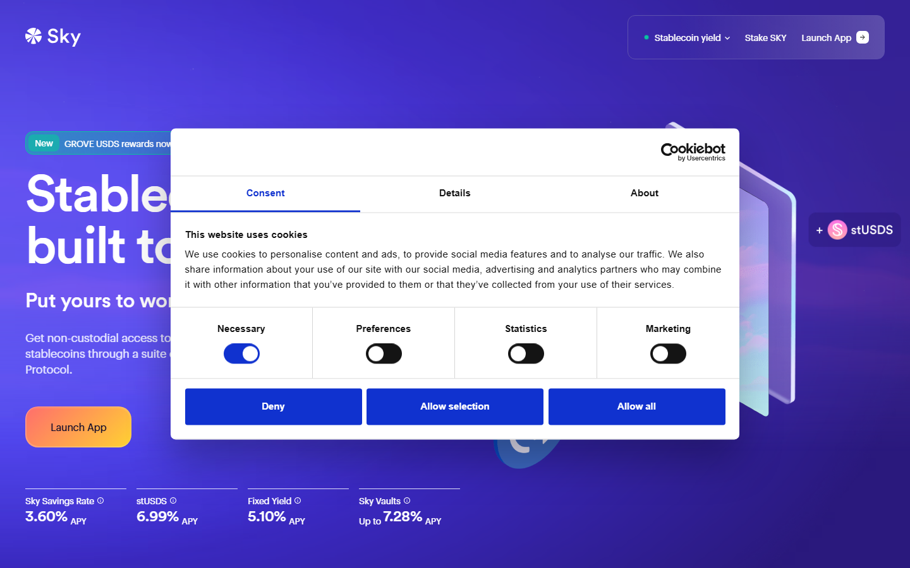
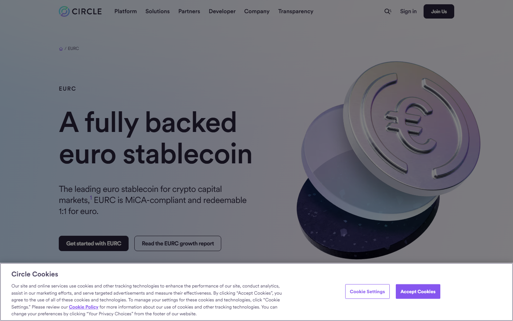
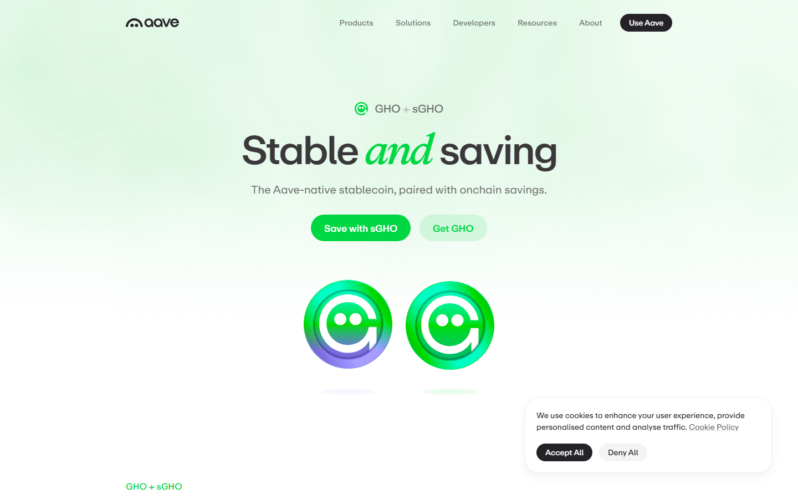
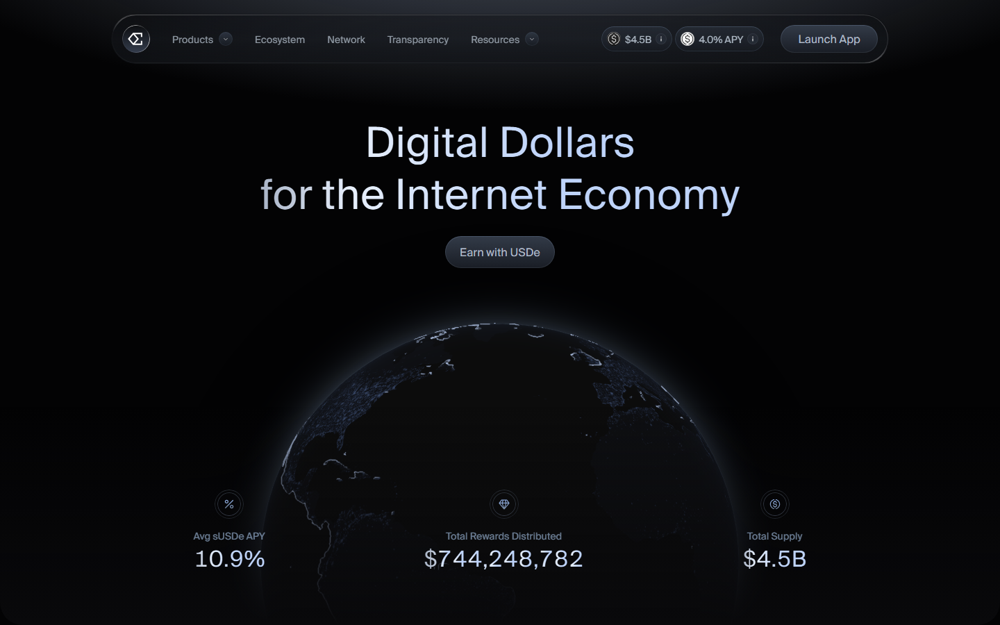

If you are picking a stablecoin for the first time, the biggest mistake is choosing by market cap alone. A bigger stablecoin is not always the safer one. The better question is: what do you actually need it for? Trading, DeFi, savings, or payments each push you toward a different answer.
That is why this guide does not rank stablecoins by size alone. It compares seven options through the lens of beginner fit, liquidity, and honest risk framing.
Why you can trust this guide Based on live issuer pages and protocol documentation reviewed July 2026. We loaded each product surface directly before writing. We checked the public product pages, reserve explanations, and visible positioning ourselves. Anything that depends on a full live transfer, a logged-in exchange workflow, or a deeper blockchain-level test still needs final verification before publication.
Plain-language summary If you want the simplest starting point, start with USDC. If you trade often or move money between exchanges, USDT is still the easiest stablecoin to find. If you want yield or DeFi features, read the risk section first. Do not assume every stablecoin works like cash.
For this article, we reviewed the live public product surfaces of the stablecoins and issuers below so the comparison would not depend only on recycled summaries.
That direct review does not replace a full live transfer test on every network. But it showed something important very quickly: which products are built to feel simple, which ones assume DeFi knowledge, and where the real friction starts for a beginner.
The screenshots below show the public product surfaces that shaped those calls, even where a full live transfer test still remains out of scope for this piece.
| Rank | Stablecoin | Best for | Main watchout |
|---|---|---|---|
| 1 | USDC | Beginners, payments, mainstream use | Centralized issuer |
| 2 | USDT | Trading and exchange liquidity | Reserve scrutiny |
| 3 | DAI | DeFi and self-custody learners | More complex than fiat-backed |
| 4 | USDS | Sky/Maker ecosystem users | Transition complexity |
| 5 | EURC | Euro-based users | Narrower support |
| 6 | GHO | Aave users | Ecosystem-specific only |
| 7 | USDe | Yield seekers (advanced) | Not a cash substitute |
Most people assume the US leads in stablecoin use. It does not.
Nigeria is number one globally in USDT and USDC ownership. Not the US. Not the UK. Not Singapore.
The reason is simple: when your local currency loses 30% of its value in a year, a dollar stablecoin is not a crypto product. It is a savings account you can actually open.
That context matters before you look at any usage table.
| Stablecoin | Market share | Where it dominates | Main use case |
|---|---|---|---|
| USDT | ~62% | Asia, Africa, emerging markets | Trading, P2P transfers, saving against local currency inflation |
| USDC | ~25% | US, Europe, DeFi protocols | Payments, institutional use, DeFi liquidity |
| DAI / USDS | ~2-3% | DeFi globally | Collateralized borrowing, yield farming |
| USDe | ~2% | Crypto-native yield seekers | Delta-neutral yield strategy |
| EURC | < 1% | Europe | Euro-denominated payments and savings |
| GHO | < 1% | Aave ecosystem | DeFi borrowing within Aave |
Data: CoinGecko / Tiger Research stablecoin issuance report, July 2026. Numbers are approximate and shift monthly.
USDT dominates in markets where people need to escape a weak local currency fast – Africa, Southeast Asia, Latin America. USDC dominates where regulation and institutional trust matter more – US, Europe, DeFi protocols.
They are both dollar stablecoins. They serve genuinely different populations.
One comment in r/CryptoCurrency’s thread on Nigeria leading global USDT and USDC ownership summed it up well: “The holding part works. The spending part still forces people back into the same broken rails.”
That gap – holding a dollar stablecoin vs. actually spending it – is the real frontier right now.
That reading also matches a second r/CryptoCurrency discussion about the stablecoin market tripling from $100 billion to $300 billion in one year, where the big takeaway was not just growth. It was that regulation and mainstream trust are now shaping which stablecoins grow fastest.
We ranked by five things beginners actually care about:
Size helped. But a clear risk story mattered more.
USDC is the easiest stablecoin to start with. The issuer (Circle) explains the reserve model in plain language, and you can find USDC on almost every major exchange and wallet.
It is backed 1:1 by US dollars and short-term US Treasury holdings. That makes the risk model simple to explain. Circle publishes monthly reserve attestations.
The main trade-off is that you rely on Circle to keep the backing in place. That is centralization risk – not a reason to avoid it, but worth understanding.
One useful outside check came from an r/CryptoCurrency post by a former insider who worked around Circle, Coinbase, and Crossmint. The thread is useful because it explains the issuer model in plain language, which is exactly what beginners need here.
Featured Image
File: ../media/01-circle-usdc-2026-07-13.png
Alt text: Circle USDC homepage showing dollar-backed stablecoin product, reserve transparency, and mainstream exchange integrations
Caption: Circle USDC homepage captured during our July 2026 review of stablecoins for beginners. Reserve transparency and broad exchange support make this the cleanest starting point for most new users.

Circle USDC page, July 2026 – reserve transparency and broad exchange support make this the cleanest beginner starting point among dollar stablecoins.
For many Coinbase users, USDC is the first stablecoin they meet. It is the platform’s default stablecoin in many common flows.
It also shows up often in DAO payouts and on the lower-risk side of many DeFi pools.
The practical difference from USDT is not performance. It is trust framing. USDC feels like the one your accountant would accept. USDT feels like the one your trader friend prefers.
A crypto insider who spent eight years at Circle, Coinbase, and Crossmint wrote in that same r/CryptoCurrency post: “Almost none of the original thesis happened. But something else did.” What happened was infrastructure, and USDC became the stablecoin that runs on top of it.
Best for: First-time stablecoin users, payments, mainstream wallet use. Not ideal for: Users who want a fully decentralized stablecoin model.
USDT has the deepest liquidity of any stablecoin. If you are trading on an exchange, it is probably the coin with the most pairs.
Tether, the issuer, has faced long-running questions about its reserves. Those questions have not caused a major peg break. But they are real – the reserve model is not as transparently documented as USDC.
For trading, USDT is hard to avoid. For long-term savings, USDC is a cleaner choice.
Screenshot 2
File: ../media/01-tether-usdt-2026-07-16.png
Alt text: Tether homepage showing USDT stablecoin product, global liquidity positioning, and reserve information
Caption: Tether USDT homepage captured during our July 2026 review of stablecoins for beginners. The page makes its global liquidity pitch obvious, which matches how traders actually use it.

Tether homepage, July 2026 – USDT positions itself around global liquidity and exchange reach. The reserve documentation is visible but less detailed than Circle’s.
Here is how most people actually use USDT day to day.
You finish a trade on Binance. You do not want to cash out yet. You also do not want to sit in a volatile coin. You move it to USDT. It stays on the exchange. No withdrawal needed.
That is the most common use case globally – idle capital parked between trades.
The second use case is transfers. In Vietnam, Indonesia, Nigeria, and Turkey, USDT moves faster and cheaper than a bank wire.
Someone in Lagos sends money to a supplier in Dubai. A bank transfer takes three days and costs 3-5%. A USDT transfer on Tron takes two minutes and costs less than a dollar. That gap is why USDT dominates in emerging markets.
One user in that same Nigeria stablecoin thread on r/CryptoCurrency put it clearly: “When your currency loses 20-40% a year, stablecoins become the practical way to protect savings.”
That is not a crypto trader. That is someone managing real financial risk.
Best for: Active traders, moving value across exchanges. Not ideal for: Users who want the clearest reserve story.
DAI is the stablecoin to learn when you want to understand how DeFi actually works.
It is not backed by dollars sitting in a bank. It is backed by crypto collateral locked in smart contracts on Ethereum. That makes it more complex – but also more native to the blockchain-based side of crypto.
If you want a simple dollar substitute, USDC is easier. If you want to understand how DeFi works when users lock up crypto to create a stablecoin, DAI is the right place to start.
That point also shows up in r/CryptoCurrency’s discussion of how a GENIUS Act yield ban could push more demand toward DeFi stablecoins like DAI. The regulatory shift makes DeFi-native stablecoins more relevant, not less.
Screenshot 3
File: ../media/01-makerdao-dai-2026-07-16.png
Alt text: Sky Money homepage showing DAI and USDS stablecoin ecosystem, DeFi vaults, and sUSDS yield product
Caption: Sky Money homepage captured during our July 2026 review of stablecoins for beginners. The public surface already shows that DAI and USDS belong to a more technical DeFi workflow than USDC.

Sky Money (formerly MakerDAO), July 2026 – the protocol that creates DAI now runs under the Sky brand, with USDS as the newer product alongside the original DAI.
DAI is what you find when you go deeper into DeFi. Not at the start. After.
You have been using USDC for a few months. You learn that a company in San Francisco is controlling whether that dollar exists. That bothers you. You look for an alternative. Someone mentions DAI.
DAI is backed by crypto locked in a smart contract. No bank. No company. The code holds the collateral, not a person. That makes it more complex. It also makes it the stablecoin that DeFi protocols trust most for their own liquidity.
A recurring argument in r/ethereum’s discussion about better decentralized stablecoins is simple: people still want a dollar stablecoin that does not depend on a company keeping money in a bank. DAI is not perfect. But it is the most tested answer to that demand.
Best for: DeFi learners, users moving beyond exchange basics. Not ideal for: Beginners who just want a simple stable dollar.
USDS is the newer stablecoin from Sky (the protocol formerly known as MakerDAO). Think of it as a redesigned DAI for the next phase of the Maker ecosystem.
If you are already using DAI or following the Sky/Maker governance changes, USDS is the natural next step. If you are new to stablecoins, start with USDC first.
The governance transition from MakerDAO to Sky is still ongoing. That adds some complexity for casual users.
Best for: Existing Sky or Maker ecosystem users. Not ideal for: Beginners who need a simple first stablecoin.
EURC is a euro-backed stablecoin from Circle, the same issuer as USDC.
Most stablecoin guides default to dollar-denominated options. EURC matters if your everyday life runs in euros – your savings, income, or spending are in EUR and you want a stablecoin that matches that.
Support is narrower than USDC or USDT. But the reserve model is transparent and follows the same Circle framework.
Screenshot 4
File: ../media/01-circle-eurc-2026-07-16.png
Alt text: Circle EURC homepage showing euro-backed stablecoin product, regulated issuer structure, and European market positioning
Caption: Circle EURC homepage captured during our July 2026 review of stablecoins for beginners. The page makes EURC feel like a regional utility choice, not a global default.

Circle EURC page, July 2026 – euro-backed stablecoin with the same reserve transparency model as USDC. Useful if your base currency is EUR.
Best for: Euro-based users, EUR-denominated payments. Not ideal for: Users who need broad global exchange pairing.
GHO is created by the Aave protocol. It is a decentralized stablecoin you can mint by depositing collateral in Aave’s lending markets.
This is not a beginner stablecoin. It is designed for users who already understand how Aave works and want to borrow against their assets in a DeFi-native way.
If you are just getting started with stablecoins, skip GHO for now. Come back when you understand what DeFi lending means.
Screenshot 5
File: ../media/01-aave-gho-2026-07-16.png
Alt text: Aave GHO stablecoin page showing decentralized stablecoin minting, collateral requirements, and Aave ecosystem integration
Caption: Aave GHO page captured during our July 2026 review of stablecoins for beginners. The page immediately signals that GHO belongs to users who already understand DeFi borrowing.

Aave GHO page, July 2026 – the stablecoin is built into Aave’s lending market. The product assumes you already understand collateralized borrowing.
Best for: Active Aave users, DeFi borrowers. Not ideal for: Anyone who is still new to crypto.
USDe is a synthetic stablecoin from Ethena. It uses a hedged trading strategy to stay near $1 instead of relying on dollar reserves in a bank.
That strategy generates yield – which is why it gets attention. But the yield comes from payments inside the perpetual futures market. When those payments turn against the trade, the model comes under stress.
USDe is not the same thing as holding cash. It is better understood as a more complex yield product that happens to trade near $1.
Screenshot 6
File: ../media/01-ethena-usde-2026-07-16.png
Alt text: Ethena USDe homepage showing synthetic dollar product, yield mechanics, and hedged trading design
Caption: Ethena USDe homepage captured during our July 2026 review of stablecoins for beginners. The page is clear about yield, but it also signals a more advanced risk model than cash-like stablecoins.

Ethena USDe page, July 2026 – the yield-generating synthetic stablecoin. The product language is honest about the derivatives-backed model – read it carefully before using.
The honest version of this is: USDe pays you a return. That is the entire reason people use it.
It is popular on trader-focused venues such as Bybit and yield-focused DeFi markets such as Pendle. Crypto-native users hold it specifically because it earns. A regular bank savings account earns almost nothing. USDe aims to earn more, but with more moving parts.
But the yield comes from a derivatives strategy. When the derivatives market goes against the strategy, the yield drops – or disappears. That is not a flaw they forgot to fix. It is how the product works.
One user in r/CryptoCurrency’s thread on bank savings losing to inflation put the frustration plainly: “My bank gives me 4%. Inflation is 7%. How is this good?”
That frustration is why USDe gets attention. A savings account is also losing to inflation. The question is which risk you prefer.
Best for: Advanced users who understand synthetic stablecoin risk. Not ideal for: Anyone looking for a simple, safe stable dollar.
Most stablecoin problems are not about picking the wrong coin. They are about the steps after picking one.
Wrong network: Sending USDC on Ethereum when the receiver expects it on Solana (or vice versa) means your funds arrive on a chain the receiver cannot access.
No gas: You need a small amount of the native token (ETH, SOL, etc.) to pay transfer fees. Stablecoins do not cover their own gas.
Assuming all stablecoins are equally safe: USDC and USDe are both called stablecoins. The risk models are completely different.
Missing the token contract check: Always confirm you are receiving the real contract address – not a scam copy with a similar name.
If you are new: USDC. Clear issuer, transparent reserves, works everywhere.
If you trade actively: USDT for the pair depth, but understand the reserve situation.
If you are learning DeFi: DAI teaches you more than any other stablecoin.
If your life is euro-based: EURC is the cleanest EUR option.
If you already use Aave: GHO is worth exploring as a next step.
If you want yield and understand the risk: USDe – but read the docs first.
USDC. The issuer model is clearly explained, reserves are attested monthly, and it works on almost every major exchange and wallet.
Yes for liquidity and trading. It has the deepest exchange support of any stablecoin. The reserve story is less transparent than USDC, which matters more for savings than for trading.
Not in every case. DAI is better when you want to understand DeFi or avoid a centralized issuer. USDC is better when you want the simplest, most beginner-friendly starting point.
Only if you understand where the yield comes from. USDe yields come from payments inside the perpetual futures market, and that mechanism has real failure conditions.
Both come from the same protocol (now called Sky, formerly MakerDAO). USDS is the newer product replacing DAI as the main stablecoin in the Sky ecosystem.